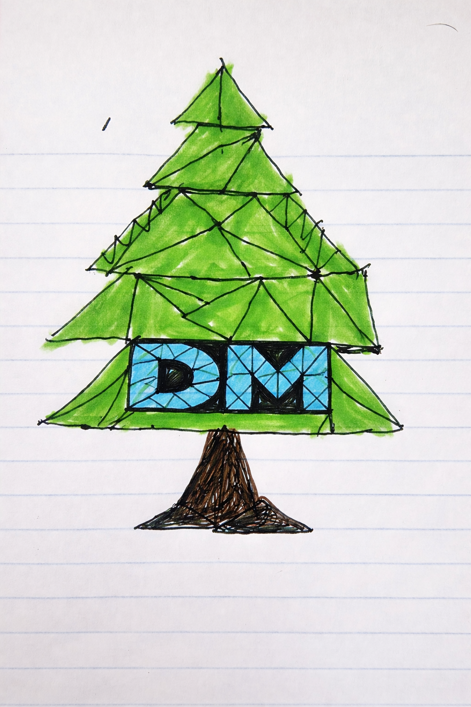

Click or drag on the canvas to paint. Use the controls to switch brush type, color, size, and circle detail.
Drawing Mode
Canvas Actions
12
16
Awesomeness feature: drag strokes fill gaps by combining repeated shape placement with line-based connectors during mouse movement, so squares, triangles, and circles each produce smoother continuous strokes.
Reference sketch: this card shows the original hand-drawn sketch used for the WebGL recreation.
Reference Image (Original Drawing)
Original Hand-Drawn Sketch:

WebGL Recreation (above):
The canvas above shows the WebGL recreation of the original drawing using triangles and geometric shapes.